| |
|
Oktober 1982: De Avant-Garde Workshop, in de Senaatszaal van het Auditorium.
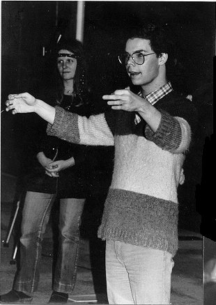
Frank Jenniskens: "Een-twee-drie..."
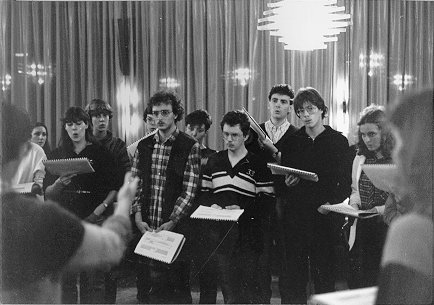
"Wat een vreemde geluiden komen daar uit!"
(Voorste rij v.l.n.r.: Corine Remmerswaal, Rene Peeren, Evert Zweekhorst,
mijzelf)
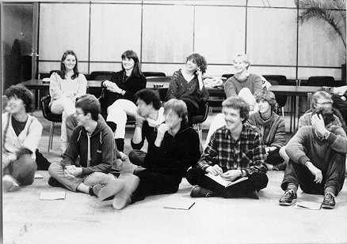
"Begrijpen we nu de zin hiervan, of denken we dat maar?"
(Achterste rij vlnr: Sandra van Rijsewijk, Monique van Mierlo, Trudy Bok,
Corine van Gompel; voorste rij vlnr: Peter Jenniskens, Toon Franken, Simon
Porro, mijzelf, Christ de Jong)
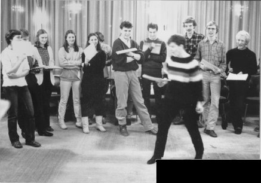
"Gierigaard, die 't al vergaart, en met de duvel naar de helle vaart!!"
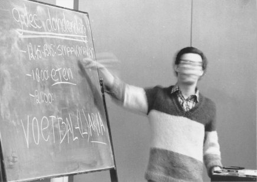
Kunnen wij in Frank's ogen wel iets goed doen?
|
|
| |
|
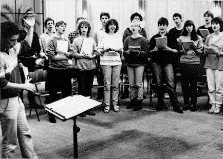
Hier begrijpen we meer van.
(achterste rij vlnr: mijzelf, ?, Ernest van Breemen, Martijn Vercammen,
Simon Porro, Stefan Tax, Matthijs Keur; voorste rij vlnr: ?, Meta de Kruif,
Trudy Bok, Corine van Gompel, Jacobien Nederkoorn, ?, Monique van Mierlo;
vooraan: wederom Frank Jenniskens)
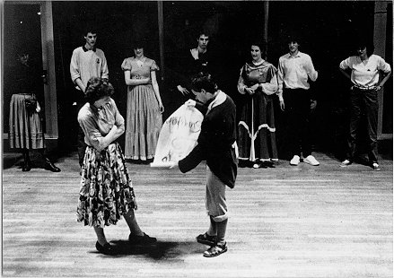
Uw aller aandacht voor de De Hofdansen!
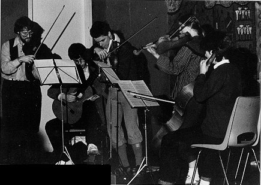
The Band....
(links: Paul Gieles, Kees Rijk, Frank Jenniskens)
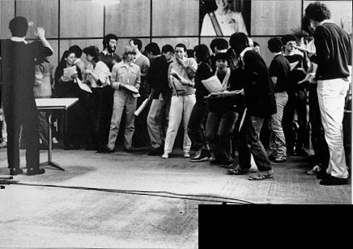
... the Singers ...
("Je ne l'ose dire")
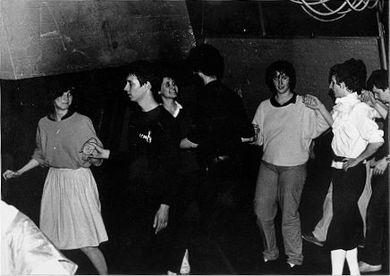
... and the Dancers.
(links: Helen Navest, Stefan Tax, Monique van Mierlo)
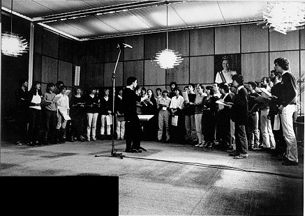
Concert in de Senaatszaal op 27 mei 1983.
(o.a. Corine Remmerswaal, Meta de Kruif, Trudy Bok, Corine van Gompel, Mark
Wijnands, Monique Bakker, Sjoerd de Jong, Marie-Jose Zweekhorst,
Marie-Louise van Dijk, Sandra van Rijsewijk, Cilia Beijk, Angelique Speltie,
Margriet Wijffels, Evert Zweekhorst, Christ de Jong, mijzelf, en de
dirigent: dat weet u intussen wel)
|
|